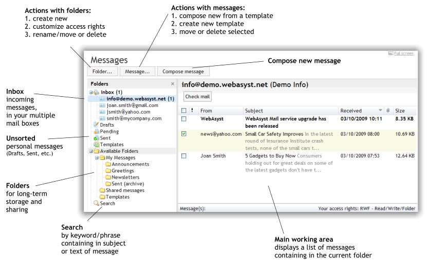
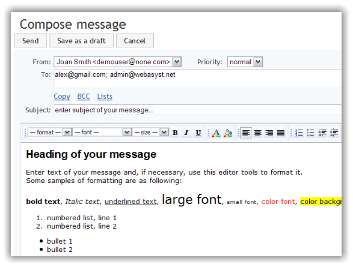
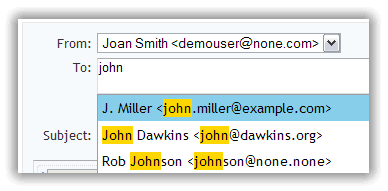
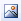
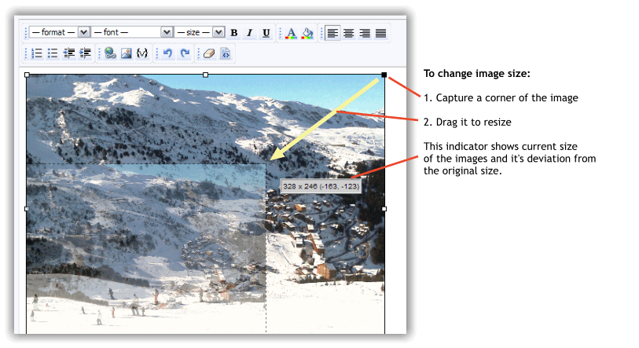
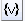
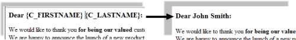

|
WebAsyst Mail at a glance |
|
|
Receiving messagesWebAsyst Mail allows you to create mail boxes of two types:
Internal: mail box created at the WebAsyst mail server, at the domain of your WebAsyst account. Example: alex@account.. NOTE: Internal mail boxes are available only to users of the WebAsyst Mail online service; they are not supported in the WebAsyst Mail software installed on your own web server.
External: mail account linked to your mail box at a remote (e.g, public or corporate) mail server. Example: alex@gmail.com; alex@alexcompany.com.
Creating mail boxes linked remote mail servers allows you to gather in your single WebAsyst account all messages which you receive to your email addresses at different mail systems; e.g. @aol.com, @gmail.com, @yahoo.com. It allows you to access all your correspondence in one place.
Every incoming mail account is organized as a separate folder in Inbox section of your WebAsyst Mail main window. Mail checking and delivering is performed automatically every minute. When new messages come in, the incoming folder name turns bold, displaying the number of incoming messages. NOTE: Access to Inbox is customizable by administrator for users and user groups.
|
|
|
Creating and customizing mail boxes- Navigate to Inbox folder and click Add mail box button.
- Select box type you want to create.
- Click Continue button.
When creating internal mail box (at the domain of your WebAsyst account) you should specify only a part of your email address (i.e., before @ sign) and create a name for your account, which will appear in Inbox folder and as From parameter in the messages sent from this email address. New email address will be immediately created on the WebAsyst mail server and you may start receiving messages at this address. When creating external mail box, be prepared to enter following parameters: - Email: your email address on a remote mail server (e.g., alex@gmail.com).
- Name: create a name which will be displayed in Inbox folder.
- Server type: POP3 or IMAP, depends on your mail box settings on a remote mail server.
- Incoming mail server: name of incoming mail server, e.g. pop.gmail.com.
- Secured connection (SSL): enable if your server requires using SSL.
- Port: by default 110 for POP3, and 143 for IMAP. However, if your mail server requires SSL connection (see above) then port number will probably have a different value; refer to your mail server manual.
- Username: login name you are using to sign in to your mail box (basically it is the same as your email address; sometimes only the first part of your email address is used; i.e., before @ sign).
- Password: which you are using to login your mail box.
|
|
|
POP/IMAP access to your internal mail boxes
Your mail box created at the WebAsyst mail server (e.g. alex@account.) can be accessed using stand-alone email client programs; e.g. Outlook, The Bat!, Eudora, etc. To provide this access, navigate to Inbox folder and click Change settings link.
In Edit mail box form click Open POP/IMAP access and use specified parameters to customize your email client software.
Access from mail client programs can be canceled at any time by clicking Revoke POP/IMAP access link.
|
|
|
Creating messages
To create a new message, click Create message button in the toolbar. In Compose message form enter recipients’ addresses, subject, and text of your message. 
WebAsyst Mail text editor allows you to easily create well designed and readable messages. It offers all basic tools for text formatting (selecting font style and size, adding indents and colors, etc.) as well as tools for image embedding, adding hyperlinks and personalization variables into your message.
|
|
|
Specifying message sender (From)
Name and email address of the current user are substituted by default into From field. This name and email will be displayed in your recipient's mail program and will be used as a return address in case your recipient replies to your message.
Besides current user's own address, one may add into From field any email addresses available in the Inbox folder. However, this choice is available only for user having access rights to this folder. |
|
|
Specifying recipients
Enter email addresses of your recipients separated by comma (,) or semicolon (;) in the To field in Compose message form. As you type an address, a pull down list of matching entries from your WebAsyst Contacts database will be offered, and you can select a recipient from this list.  Below To field there are Copy and Bcc links. Click one to open a field in which to enter recipients to receive copies of this message.
If you have previously prepared recipients’ list(s) in your WebAsyst Contacts service, you will see Lists link below To field. Click it, and select contact lists to which this message should be sent. This method of specifying recipients is very efficient for bulk mailing of, for instance, newsletters to your subscribers. |
|
|
Adding images
In order to insert an image inside your message body, click in the text where you want to place the image, and then click this button  from the toolbar. Select image file on your local disk. Once uploaded, image will appear right in the text where you can change image size and location (simply drag and drop image to change its place). 
Adding images in this way does not increase the size of your outgoing message. In fact, image file stays located on web server in your WebAsyst account, and is downloaded from your account only when recipient opens your message.
This method of sending images is much more efficient than sending images as attachments. It guarantees fast message delivery without risk of exceeding your recipient's mail box limit. |
|
|
Attaching filesTo add an attachment to your message, click Attach file link located beneath text area in Compose message form. You can attach multiple files to your message. although total size or attachments may be limited by your account billing plan. NOTE: Attaching large files is not recommended. If you send bulk email to multiple recipients, every message will include these large file attachments and overload your mail server. Instead of using file attachments, we recommend that you use links to files uploaded to your WebAsyst Files account.
|
|
|
Scheduled sending
WebAsyst Mail allows you to schedule later sending of your message on a specified date and time in the future. Click Schedule later sending link in the bottom of Compose message form and enter the date and time when you want your message to be sent, then click Send button. Your message receives Pending status and will be saved in Pending folder by default. You can move it to any available folder. Pending messages will appear in green italics in your message list. Scheduled sending can be canceled at any time, or change data/time of sending. |
|
|
Personalizing messages
WebAsyst Mail lets you personalize your outgoing emails by inserting recipients’ individual information (names, titles, and other details) in messages addressed specifically to them. This is accomplished with the use of personalization variables; i.e. placeholders that are added to a message and are dynamically replaced by the actual values stored in your recipients database. This feature is especially useful in bulk messaging – you just need to compose one message and send it out to any number of recipients as if it were written only to every one of them individually. To add a variable to your message, click in the text where you want to place it, and then click this button  from the toolbar. Select a variable from the list and click it (e.g. {C_FIRSTNAME} {C_LASTNAME}). If you remember exact spelling of a variable, you may simply type it in your message {do not forget brackets}.
When the message is sent, variables will be substituted with their real values as shown in the sample below: 
NOTE: Substituting of variables from the category Recipient's parameters is performed only when you send message to contact lists. This is because there must be an exact correspondence between your message recipient and an entry in WebAsyst Contacts service.
|
|
|
Adding an Unsubscribe option to outgoing emails
When sending bulk emails, it is a standard practice to add a special link in your message so that your subscribers can unsubscribe from future mailing. Moreover, without an unsubscribe link in your message, spam complaints may result, and your IP-address, and then your WebAsyst account, will be banned by recipients’ mail servers.
To add unsubscribe link to your message, click variable selection button from your toolbar, and then click {UNSUBSCRIBE} in the bottom of variable list. Unsubscribe link will be added in the text of your message. You can change the phrase of this link to something like “unsubscribe from future mailings”; however, be careful and do NOT change HTML code associated with this link. |
|
|
Organizing and managing your mailbox
In the left part of main screen there is Folders navigation panel. It is designed for organizing messages of different types and consists of the following sections: Inbox: every mail account (email address) has a dedicated folder. New messages always appear in these folders first, and stay there until you move them to other available folders, or delete. As soon as you receive a new message, mail box name turns bold and a number of arrived messages appears in brackets.
Drafts: when you create a new message you can save it as a draft, and it will be saved in this folder.
Pending: in this folder all messages scheduled for later sending are saved.
Sent: all sent messages will appear in this folder. Pending messages move to “Sent” folder at the moment when they go out. If an error occurred while sending (incorrect recipient's address, message bounced by a recipient's mail server, etc.) message will still be saved in this folder, and highlighted with a red color in the list.
Templates: new template created using Compose... / Compose new template command will be saved in this folder.
Available folders: hierarchical structure of folders for long-term storage and sharing of email messages. This section consists of folders and subfolders, similar to organization of file storage on your local disk. |
|
|
Personal user foldersFollowing folders are personal and can not be shared with other users: - Drafts
- Pending
- Sent
- Templates
Every time you create a new message or a template, it is saved in one of these folders. Other users of your WebAsyst account can not access these messages until you move them into one of the shared folders in Available folders section.
|
|
|
Shared folders
Following sections can be customized to have a shared access by multiple users of your WebAsyst account: Available folders section is dedicated for a permanent storage and sharing messages. In the section messages are organized in folders and subfolders. For every folder you can specify one of the following access rights for other users or user groups: - Read (R) – a user can list and read messages in this folder,
- Write (W) – a user can add/modify messages in this folder,
- Full (F)
– a user can add/modify messages, folders & permissions.
To customize access rights click Folder... / Customize access rights. When setting access level to a folder, the combination of personal and group access rights will be applied, as it is illustrated in the table below:
|
Personal rights
|
Group rights
|
Effective rights
|
|
-
|
R
|
R
|
|
R
|
RW
|
RW
|
|
RWF
|
R
|
RWF
|
NOTE: To customize access rights for other users, you must have Full access rights to a folder and have access to Users section in your WebAsyst account.
|
|
|
Message statuses
Every message can have one of the following statuses (every status has its own color code in the list):
- Received: all new messages incoming in the Inbox folder get this status.
- Draft: messages with this status were composed but neither sent nor scheduled for sending. They can be modified, sent immediately, or scheduled for later sending.
- Pending: messages with this status were composed and scheduled for sending, but not sent out yet. They can be viewed, moved, deleted, turned back to draft, or rescheduled for other data/time of sending.
- Sending: this status is assigned for all messages for which the process of sending has been already started by a mail server but is not completed yet.
- Sent: messages with this status were already sent out. They can be moved, deleted, forwarded to other recipients, but cannot be modified.
- Template: messages with this status are used as templates to create new messages. They can be used to create a new draft message, but cannot be sent out directly.
|
|
|
Actions with messages and folders
Moving messages: select messages in the list and click Message... / Move from the toolbar. Then select a folder where you want to move selected messages and click Move button. NOTE: Messages can be moved from Inbox, and from personal folders (Drafts, Pending, Sent, Templates) in any available folder. However, moving from permanent storage folders back to Inbox or a personal folder is not allowed.
To delete messages, selected them and then click Message... / Delete. To add new folder, click Folder... / Create new from the toolbar and enter new folder name. New folder will be added as a subfolder in the currently open folder. If you want to create root folder, you must navigate to “Available folders” section first. To move folder use Folder... / Move... from the toolbar.
To delete folder use Folder... / Delete from the toolbar. NOTE: You must have Full access rights to the folder which you want to move or delete.
|
|